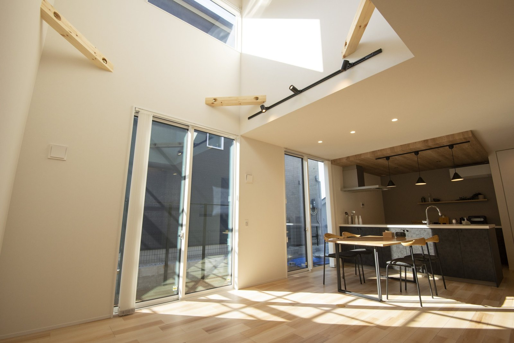
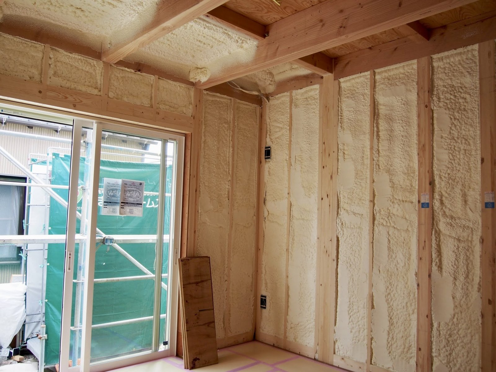
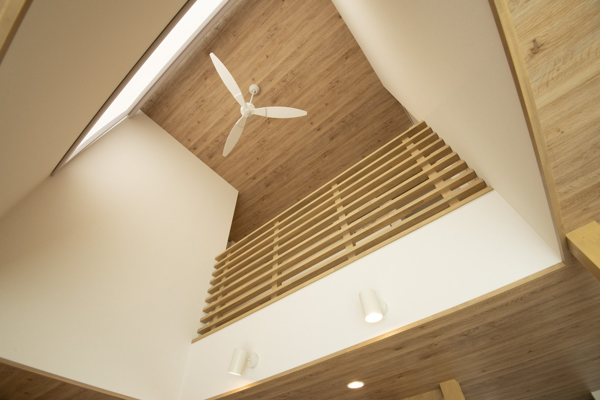
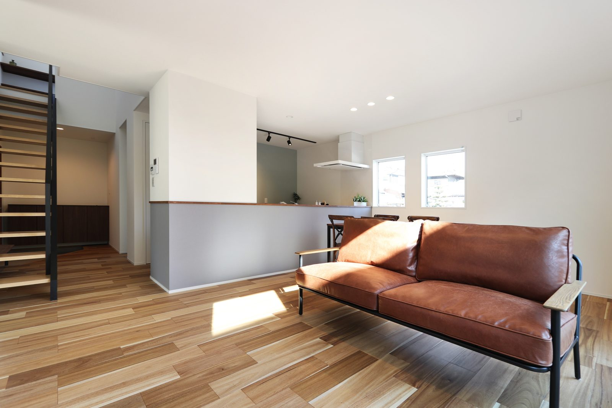
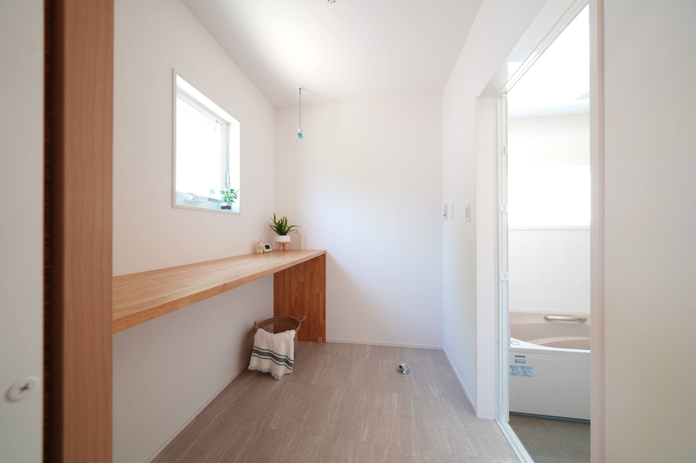

奈良の冬、朝がつらくないですか。
エアコンはついている。
なのに、足元だけ冷たい。
盆地は放射冷却で朝の冷え込みが強く、底冷えという言葉がぴったりきます。
ただ、あの寒さの原因は、外の気温だけではありません。
家のつくりで、大きく変わります。
ポイントは、空気の温度ではないということです。
体は、まわりの面の冷たさを感じています。
だから、暖房を強くしても足元は寒いままなのです。
寒さは、窓から入ってきます
冬に家から逃げる熱のうち、いちばん多いのは窓からです。
壁でも屋根でもありません。
だから、窓の性能を上げるのがいちばん効きます。
枠が冷たくなりにくい樹脂のサッシ。
ガラスの間に空気やガスを挟んだ複層ガラス。
この2つで、窓ぎわの体感がまるで変わります。

南に大きな窓を取れば、晴れた日の昼間は暖房がほとんど要りません。窓の性能が足りていれば、の話ですが。
もうひとつ、冬の窓には役目があります。
日差しを入れることです。
冬の太陽は低い位置を通るので、南の窓から奥まで光が届きます。
晴れた日の昼間は、これだけで部屋が暖まります。
夏に暑くならないよう庇や軒を出しておけば、両立できます。
断熱の等級を、数字で見ておく

仕上げてしまえば見えません。だから、建てるときにしか決められない部分です。
家の断熱は、等級という数字で比べられます。
数字が大きいほど、熱が逃げにくい家です。
あわせて出てくるのがUA値です。
こちらは、家じゅうからどれだけ熱が逃げるかを表した数字で、
小さいほど逃げにくい、と覚えてください。
等級4は、2025年4月から新築で満たすことが義務になった水準です。
つまり、いま建つ家の最低ラインです。
等級5はZEHと同じ水準で、2030年からはこれが基準になる予定です。
等級6は、HEAT20のG2という民間の基準に相当します。
等級4の家と比べて、冷暖房にかかる費用が3割から4割ほど減るという試算もあります。
30年住む家を、いまの最低ラインに合わせる理由はありません。
すき間の少なさも、同じくらい大事です
断熱材をどれだけ入れても、すき間があれば冷気は入ってきます。
このすき間の量を表す数字がC値です。
こちらも、小さいほどすき間が少ない家です。
C値は図面では出せません。
建ててから測る数字です。
だから「測っているかどうか」を聞いてみてください。
シバ・サンホームの標準はC値0.2です。
数字の意味も含めて、性能のページにまとめました。
吹き抜けは、寒いのでしょうか

上にたまった暖かい空気をゆっくり下ろすと、足元との温度差が小さくなります。
よく聞かれます。
答えは「家による」です。
断熱と気密が足りない家では、吹き抜けは確かに寒くなります。
暖めたそばから熱が逃げ、暖気は上へ行ってしまうからです。
逆に、断熱と気密が十分な家では、吹き抜けは味方になります。
家じゅうの温度が均されて、部屋ごとの寒暖差が減ります。
天井のファンで空気をゆっくり回せば、上下の差はさらに小さくなります。

こういう家ほど、断熱と気密が効いてきます。逆にいうと、そこが弱いと寒さが回ります。
間仕切りの少ない間取りも同じです。
性能とセットなら快適、性能が足りなければ寒い。
デザインの好みの前に、そこを確かめてください。
寒くない家は、住んでからの安心にもなります
冬の家の中で、廊下や脱衣室だけが極端に寒い。
奈良の古い家では、めずらしくありません。

冬の朝、ここだけ寒い家は多いです。服を脱ぐ場所ほど、暖かくしておきたいところ。
家じゅうの温度差が小さいことは、暮らしの快適さだけの話ではありません。
暖房費が下がり、冬の朝の負担も軽くなります。
断熱は、あとから足すのがいちばん高くつく部分です。
壁を開けることになるからです。
建てるときに決めておいてください。
まとめ
- 足元の寒さは、空気ではなく窓・壁・床の冷たさが原因
- いちばん効くのは窓。樹脂サッシと複層ガラス
- 断熱は等級とUA値で比べられる。奈良の多くは6地域
- 等級4は最低ライン。2030年には等級5が基準になる予定
- すき間の少なさ（C値）は、建ててから測るもの
- 吹き抜けが寒いかどうかは、家の性能しだい

奈良の工務店シバ・サンホームで、初めての家づくりに伴走しています。お金のことこそ正直に。モットーはスピード・誠実さ・楽しさ。